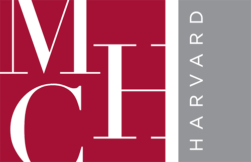

CALL FOR PAPERS
Over the past decade, ecological habitats have been increasingly understood as more complex and elusive to study from the lens of a single author or discipline. As new ways of thinking-by-doing collectively become imperative, collaborative practices both inside and outside of academia have emerged in dynamic and vibrant ways. Artists, anthropologists, archaeologists, architects, ecologists, engineers, herbalists, geographers and local communities have begun assembling and employing diverse methods and theories for researching the field site, advocating for a more expansive exchange between new sets of agents.
Collaborations Afield explores the fertile ground of research on the fringe, where collective work takes root across disciplinary boundaries, between human and non-human, biological, microbial, and artificial actors. Work afield signifies both the observational practices of place-based knowledge production and the state of environmental humanities as an area of study itself. To go afield is to venture beyond the range of one’s own expertise by physically working in, and thinking with, the field site. By investigating research questions through close observation, attuned listening, and data gathering, collaborations afield commune around a shared context approached through diverse methodologies.
Across artist residencies, design studios, and science labs, the field has become both a site of inquiry and an object of study. Attending more closely to the bacteria, the reeds, the wind, the soil as matter with which to play and think critically, artists-in-residence at nature conservation sites reframe the environment as a medium in itself. The study of elemental media takes this a step further, re-organizing our perception of dust, air, water amongst other matter as phenomena that speak to deep time and anthropogenic change. To literally tread in the weeds of a wetland ecosystem, as Gediminas and Nomeda Urbonas’s Swamp School illustrates, is to move across molecular and planetary scales at once. To study the industrial ruins of the post-Soviet space as Lori Khatchadourian’s project Afterlife of Socialist Modernity does, or to observe architectural heritage in ruin up close as Caitlin Desilvey’s fieldwork for Curated Decay reflects, is to witness how matter is consumed and transformed, allowing new forms of life amongst people and plants to emerge. To collaborate with artificial intelligence in the field site is to deploy new ways of sensing, monitoring, and analyzing environmental data to understand and predict ecosystems in flux. The “patch” for Anna Tsing, the “animistic apparatus” for May Adadol Ingawanij, and “earthbound knowledge” for the Anthropocene Curriculum are all modes of apprehending a globally dispersed, and yet deeply attentive, impulse to study a rapidly changing environment and its human and nonhuman interdependencies.
In these somewhat formalized—yet still unruly and shifting—spaces of gathering, how is fieldwork assembled, archived, and studied? What alternative forms of scholarship in the environmental humanities is made possible when diverse disciplines commune around a shared site? How do emergent practices in observation and documentation of field sites shape theory, and in turn, how does environmental humanities discourse generate new methodologies for fieldwork?
Collaborations Afield invites proposals from graduate students who work within collectives composed of humans and non-humans; work across geographies and scales; and/or embrace disciplinary contamination to think about the environmental humanities in new and expansive ways. The conference invites proposals that engage across, and extend beyond, the following fields: media studies, visual culture, sound studies, history of art and architecture, history of science, anthropology, critical heritage studies, comparative literature, landscape architecture, nature conservation, filmmaking, archaeology, social practice art, plant science, ecology, entomology, mycology, atmospheric science, geology.
Submissions will be accepted until January 28, 2025 at collaborationsafield[at]gmail.com, and should include a 300-word abstract with a proposal title, 3-5 bibliographic references, and a 150-word bio in a single PDF. Accepted proposals will be notified by mid-February. Full paper drafts will be due by mid-March to ensure a more active and lively discussion amongst panelists. Presentations should be 20 minutes in length.
Registration is open to anyone interested in attending the conference. REGISTER
<KEYNOTE SPEAKERS
May Adadol Ingawanij | เม อาดาดล อิงคะวณิช is a writer, curator, Professor of Cinematic Arts, and Co-director of the Centre for Research and Education in Arts and Media, University of Westminster. She works on Southeast Asian contemporary art; artists moving image; de-westernised and decentred histories and genealogies of cinematic arts; avant-garde legacies in Southeast Asia; forms of future-making in contemporary global majority artistic and curatorial practices. She writes in Thai, English, and in translation, for a wide range of academic and arts publications. Her recent collaborative curatorial projects include the 69th Flaherty Film Seminar – To Commune, Legacies, and Animistic Apparatus.
Gediminas and Nomeda Urbonas are artists, educators, researchers, and co-founders of the Urbonas Studio, an interdisciplinary research practice that facilitates exchange amongst diverse nodes of knowledge production and artistic practice in pursuit of projects that transform civic spaces and collective imaginaries. They also collaborate with experts in different cultural fields to develop practice-based artistic research models that allow participants—including their students—to pursue projects that merge urbanism, new media, social sciences and pedagogy to critically address the transformation of civic space and ecology.
Urbonas have exhibited internationally, including in Manifesta and Documenta exhibitions, a solo show in the Venice Biennale, MACBA in Barcelona and National Gallery of Art in Vilnius, among numerous other international shows and have been awarded a number of high level grants and residency awards. They are co-founders of UTEMPUS interdisciplinary art program (1993), Vilnius Interdisciplinary Lab for Media Art (VILMA); the VOICE (www.balsas.cc), Transaction Archive, and are co-directors of the Pro-test Lab Archive. Their publications include Devices for Action (MACBA Press, 2008) and Villa Lituania (Sternberg Press, 2008). Urbonas co-edited Public Space? Lost and Found (MIT Press, 2017) that brings together artists, planners, theorists and art historians in an examination of the complex inter-relations between the creation and uses of public space and the roles that public art plays therein. Urbonas’ five year-long research project on Zooetics exploring the potential to connect with the noetics and poetics of non-human life in the context of the planetary ecological imbalance, concluded in 2018 with the symposium at MIT and opened a new research program focusing on Climate Visions. Urbonases curated the Swamp School – future learning environment at the 16th Venice Architecture Biennale 2018. Their co-edited volume Swamps and the New Imagination: On the Future of Cohabitation in Art, Architecture and Philosophy published by Sternberg Press and distributed by MIT Press, is forthcoming in 2024.
Urbonas are currently working on several large scale commissions and research projects that investigate movement in artistic practice towards less tangible and more complex spaces of public/private contestation and shifts toward new environmentalism in public space discourse and contemporary understandings of nature.
Darsha Hewitt (*1982) is a Canadian interdisciplinary artist investigating the material politics of Music and Sound. She makes electromechanical sound installations, drawings, audio-visual works, how-to videos, sculptural installations and performative workshops that explore technological entanglements and their implications on humans and ecology.
With a media archeological perspective she explores sound beyond its sonic parameters through deconstruction of discarded technology. She focuses on the ethics of (planned) obsolescence, post-growth strategies and practices of technology that consumer society throws — in doing so her works race out systems of power, economy and control inherent throughout socio-techno infrastructures.
Alongside reverse engineering, restoration and aesthetic experiments with decomposing music technology, she connects with a diverse range of technical communities, including retired engineers and technicians as a means to learn disappearing hands-on techniques that she integrates into her studio research and shares within the art/technology milieu. Her signature DIY electronics and experimental approach to sound pedagogy have been profiled in forums such as Chaos Computer Congress, Make: Magazine and recently in Garnet Hertz’s book ‘Art + DIY Electronics’ (MIT Press, 2023).
Hewitt’s work is presented internationally, with recent exhibitions at Werkleitz Festival (DE), Ars Electronica (AU), Zagreb Museum of Contemporary Art (HZ), Hong Kong City Hall, Halle14 – Centre for Contemporary Art (DE), MU Artspace (NL), CTM/Transmediale Festival (DE), The Museum of Art and Design (NYC), Deichtorhallen Centre for Contemporary Art (DE), Kampnagel (DE), Modern Art Oxford (UK) and WRO Media Art Biennale (PL).
<ORGANIZERS
Noha Mokhtar is an artist, anthropologist and editor based in Zurich. She holds a BA in Photography from ECAL and another in Anthropology and Middle Eastern Studies from the University of Bern. Her research explores the relationship between domestic space, kinship, and materiality. She works across photography, video, installation, and writing. Currently a doctoral candidate in Social Anthropology at Harvard University, she is also the co-founder of the transdisciplinary publishing house Edition Hors Sujet. Her work has been supported by the Fulbright Study Grant, Harvard Film Study Center, CMP Mellon Fellowship, and the Swiss Design Award, among others.
Pauline Shongov is an artist, filmmaker, and visual/media studies scholar. Her work explores oral, historical, affective, and haptic senses of place as well as local and diasporic forms of community belonging. Her research cuts across the fields of media archaeology, ruination studies, process philosophy, elemental media, visual ethnography, ecological thought, and history of science. Her scholarship has been published in Metode (ROM Art and Architecture) and is forthcoming in Thresholds (MIT Press). She is the co-founder of the practice-based research initiative Off-site. Currently, she is a doctoral candidate in Film and Visual Studies at Harvard University and a Presidential Scholar. Her work has been supported by the LEF-Flaherty Fellowship, Harvard Film Study Center, Sensory Ethnography Lab, Harvard Mellon Urban Initiative, Davis Center for Russian and Eurasian Studies, and the Cornell Council of the Arts.
Maya Shopova is an architect and filmmaker based in New York. She holds a BSc in Architecture from McGill University and an MArch from the Massachusetts Institute of Technology (MIT). Her research interests in critical heritage studies and alternative preservation practice meet at the intersection of architecture, landscape, and film. She is the co-founder of the practice-based research initiative Off-site. Her work has been supported by the Harvard Mellon Urban Initiative and the Council for the Arts at MIT. She has taught design studios at MIT and McGill University and is currently an associate at Diller Scofidio + Renfro.
SPONSORS
 
Photography by Jessica Sarah Rinland